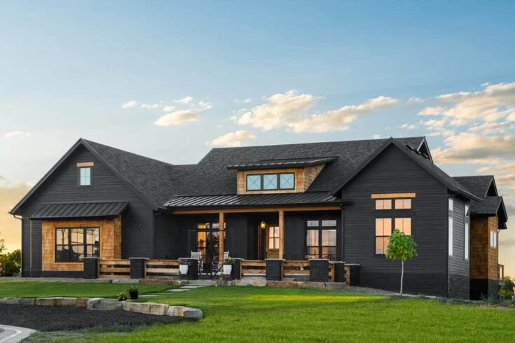

Ranch Style Homes
Timeless, Comfortable, and Spacious Living
Ranch-style homes are synonymous with simplicity, open spaces, and a deep connection to nature. Whether you’re building your first home or looking to upgrade, the classic ranch design offers a perfect blend of tradition and modern functionality.
Why Choose a Ranch-Style Home?
1. Open Floor Plans for Modern Living
Ranch-style homes are designed with an emphasis on openness and flow.
Expansive open spaces allow for natural light to fill the rooms, creating a bright and airy atmosphere.
The floor plans typically integrate the kitchen, living, and dining areas to foster a sense of togetherness and allow for effortless movement between spaces.
2. Single-Level Living for Accessibility
One of the most appealing aspects of ranch-style homes is their single-story design. This makes them ideal for those who prefer a home without stairs—whether you're looking for easier accessibility or simply a more convenient, low-maintenance layout.
3. Outdoor Connection
Ranch homes often feature large windows and sliding glass doors that offer a seamless transition between indoor and outdoor spaces. Whether it’s a backyard patio, garden, or a sprawling landscape, ranch homes make it easy to enjoy the beauty of nature right from your living room.
4. Versatility and Customization
Ranch homes are incredibly versatile. From the number of bedrooms to the design of your kitchen, ranch homes offer countless ways to make the space your own. Whether you prefer a more traditional or contemporary aesthetic, we can tailor your ranch-style home to reflect your unique tastes.
Popular Ranch-Style Home Features
- Low-Pitched Roofs:
- The classic ranch home often features a low-pitched roof with wide eaves, lending it a streamlined and unpretentious look.
- Large Windows:
- Generous window placement ensures an abundance of natural light and a constant connection to the outdoors.
- Attached Garages:
- Ranch homes feature garages seamlessly integrated into the main structure, providing easy access while maintaining the home’s flow and symmetry.
- Open, Functional Kitchens:
- The kitchen is often the heart of a ranch-style home, open to the living and dining areas for easy entertaining and family interaction.
- Outdoor Living Spaces:
- Whether a porch, deck, or patio, ranch homes typically come with an outdoor space that complements the easy, comfortable lifestyle they offer.